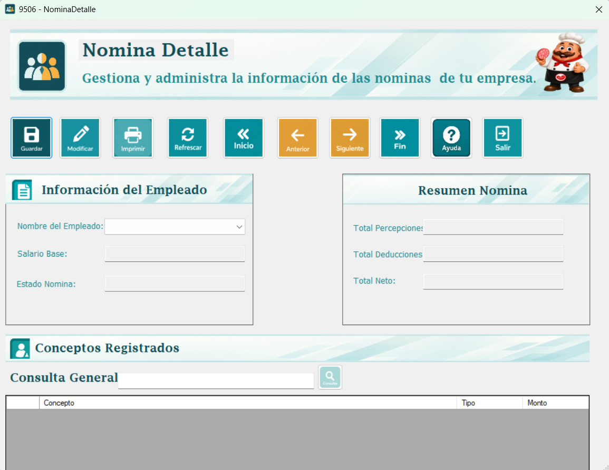
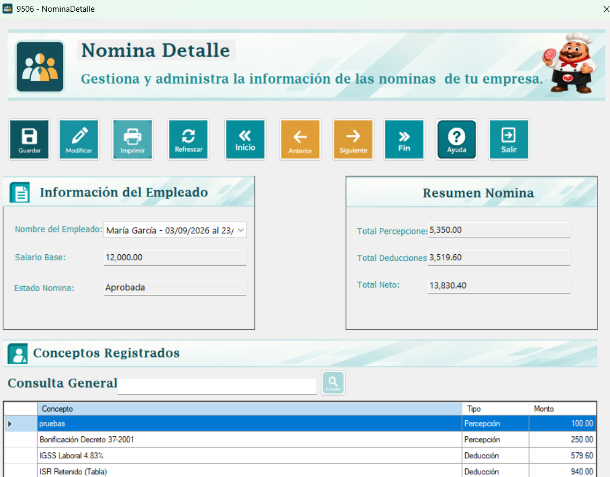
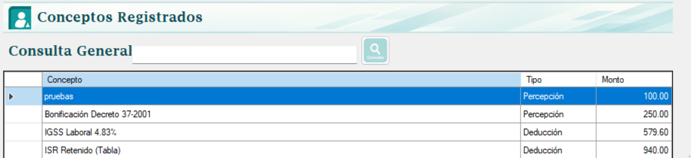

Este formulario permite consultar los conceptos de una nómina y generar su detalle cuando todavía no existe. Cada línea identifica una percepción o deducción y su monto. La ventana muestra, además, el salario base, el estado y los totales que ya fueron guardados en el encabezado de la nómina.
La nómina se selecciona en una lista que combina el nombre del empleado con las fechas del período. No se selecciona únicamente una persona: un empleado puede tener varias nóminas. Las rechazadas no aparecen en esta lista; las demás se ordenan por nombre del empleado y, para cada persona, por fecha inicial descendente.

La nómina debe existir y estar Aprobada. Debe conservar los mismos totales de percepciones y deducciones que resultan al volver a calcular sus conceptos. El detalle solo se genera una vez; no se utiliza este formulario para editar importes de las líneas o volver a generar un detalle existente.
La opción de cada nómina incluye la indicación (sin detalle) cuando no tiene líneas registradas. Esta marca señala una situación pendiente, pero no garantiza por sí sola que la nómina cumpla todas las condiciones para generar el detalle.
Nombre del Empleado: Lista de nóminas con empleado y período. Seleccione la opción correspondiente al pago que desea consultar.
Estado Nómina: Estado guardado en el encabezado. Para generar un detalle nuevo debe ser Aprobada.
Salario Base: Salario que se registró al guardar la nómina.
Total Percepciones: Suma de percepciones registrada en el encabezado, incluidas las comisiones que se incorporaron al cálculo.
Total Deducciones: Suma de deducciones registrada en el encabezado.
Total Neto: Importe neto guardado en la nómina; contempla salario, percepciones, horas extra y deducciones.
Conceptos Registrados: Tabla de solo lectura con Concepto, Tipo y Monto. Tipo distingue Percepción y Deducción.
Los importes del resumen se leen del encabezado; no se vuelven a sumar desde las líneas visibles. Por eso, buscar un concepto no modifica los totales superiores. Las líneas del detalle corresponden a percepciones y deducciones; el salario base y las horas extra no se agregan como líneas independientes en este proceso.
1. Abra la lista de nóminas y seleccione el empleado y período correctos.
2. Revise el estado, los importes guardados y si aparece la marca (sin detalle).
3. Presione Guardar, que en esta ventana ejecuta la generación del detalle.
4. Responda Sí a la pregunta de confirmación para continuar. Si responde No, no se registra el detalle.
5. Lea el resultado. Si la generación fue exitosa, se actualizan la lista y la tabla, conservando la nómina seleccionada.
Primero verifica que la nómina exista, esté Aprobada y no tenga detalle. Después recalcula sus conceptos para el mismo empleado y período. Compara, a cuatro decimales, los totales de percepciones y deducciones recalculados con los que fueron guardados en el encabezado. Si no coinciden, detiene la generación y muestra la diferencia.
Si hay comisiones de ventas, busca en el catálogo el concepto llamado Comisión por Ventas para relacionar ese monto con un identificador válido. Al terminar las comprobaciones registra todas las líneas en un lote con transacción. El mensaje exitoso indica cuántos conceptos se insertaron.

Consulta General filtra por el nombre del concepto dentro del detalle cargado. Borre el texto para volver a mostrar todas sus líneas. Inicio, Anterior, Siguiente y Fin cambian la nómina seleccionada en la lista y cargan su información; no recorren las filas del detalle. Al cambiar de nómina se limpia la búsqueda.

Refrescar vuelve a cargar las nóminas disponibles y el detalle, procurando mantener la selección actual. Imprimir abre el reporte de detalles; en esta versión el reporte consulta todos los detalles y no recibe un filtro con la nómina seleccionada. Salir cierra esta ventana.
Debe seleccionar una nómina: Elija una opción antes de presionar Guardar.
Solo se puede generar el detalle de nóminas en estado Aprobada: Revise el estado. Una nómina Pagada puede consultarse, pero no generar detalle nuevo.
El detalle ya fue generado: Consulte las líneas existentes; el formulario no permite sustituirlas.
Los conceptos cambiaron: Revise la configuración. El sistema indica rechazar la nómina y generarla nuevamente; esta acción se realiza desde el encabezado.
Falta crear Comisión por Ventas: Cree el concepto con ese nombre en Percepciones y Deducciones y vuelva a intentar.
No hay percepciones ni deducciones: El sistema no registra un lote vacío. Revise los conceptos aplicables al empleado.
Seleccione la nómina de Ana correspondiente al período requerido. Si está Aprobada y sin detalle, use Guardar y confirme. Si aparecen una bonificación de Q250 y una deducción de Q100, esas líneas explican los conceptos adicionales; el salario base sigue en el resumen. Escriba Bonificación en Consulta General para localizar esa línea sin cambiar el neto guardado.